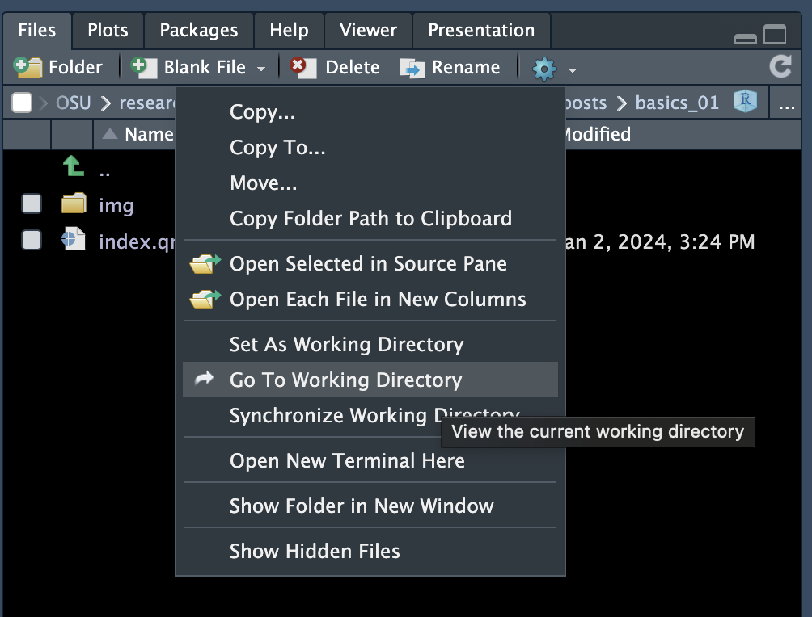
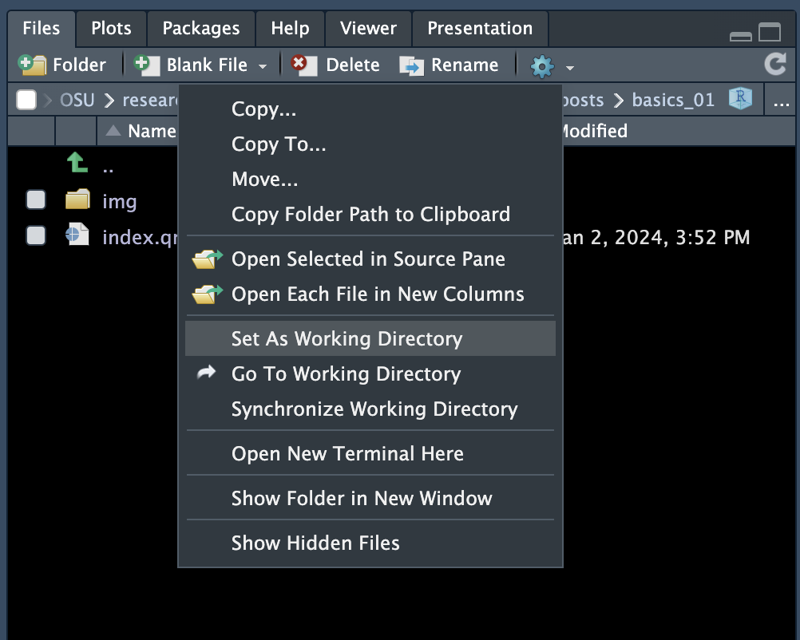
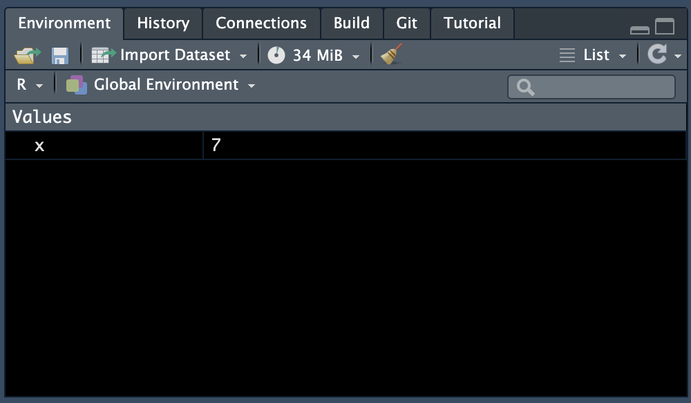
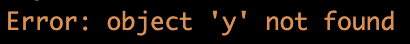

getwd()[1] "/Users/poelstra.1/Library/CloudStorage/Dropbox/mcic/teach/codeclub/codeclub-site/posts/S07E01_basics_01"We are going to begin this semester’s Code Club right from the beginning working in R. This session does not assume any prior knowledge of R or other programming languages.

Since you’re here, I can assume you don’t need to be convinced that learning R is useful. R is a programming language that is used widely by data and other scientists. Most people get into R to conduct statistics, though its a top way to make data visualizations and do lots of other things. Since R is open source, there are endlessly available free resource to learn how to do practically whatever you want on the internet.
But first, what is the difference between R and RStudio? R is a programming language while RStudio has a graphical user interface (GUI) that allows you to more easily use R. RStudio is an Integrated Development Environment (IDE), meaning its a separate program that has an interface designed for running R. You can run R just using the R console (i.e., standalone R) but it is really easier and you will find additional functionality if you use RStudio. We need to download both R and RStudio.
We will download R first. At the time of me writing this (January 2024) the most updated version of R is R-4.3.2.
Navigate to where you’ve downloaded your executable R file, and install it.
You can also use R and RStudio through the Ohio Supercomputing Center. If you want to do this, connect with Jelmer and he can add you to our Code Club project.
As of January 2024, the most recent version of R is 4.3.2. If you already have R and it is version >4.2, no need to do anything.
If you’ve already installed R and just need to update, and want to make sure you keep all your downloaded packages, follow these instructions. Updating only RStudio doesn’t do anything to your packages.
Once you have R, you can download RStudio. Here you can download the version of RStudio
Navigate to where you’ve downloaded your executable RStudio file, and install it.
Once you’ve downloaded both R and RStudio, you can open RStudio.
The RStudio integrated development environment (IDE) has four quadrants.

.R, .Rmd, .qmd or others.There is an RStudio cheatsheet for the IDE which is very useful, and you can find it here.
The concept of a directories and your working directory is an important one when coding. You can think of a directory as a synonym for a folder. Each file is contained within a directory, these folders have physical locations on your computer, or a defined path. Directories are hierarchical, and slightly different on different operating systems (e.g., Mac, Windows, Linux). If you open up your Finder (Mac) or File Explorer (Windows), you can navigate around the different locations on your computer.
Your working directory is just as it sounds - it’s the location/path on your computer where you are currently working. This is important as your files will be by default read in, stored, and saved to this location. This means you need to know where this is.
We can figure out where our working directory is by typing into the console the function:
getwd()[1] "/Users/poelstra.1/Library/CloudStorage/Dropbox/mcic/teach/codeclub/codeclub-site/posts/S07E01_basics_01"You can see that the output path is MY working directory - yours will be different as the set up of your computer organization structure is different from mine. I am also using a Mac so you can see my path as forward slashes / while Windows machines will have backslashes\.
You can also use the RStudio GUI to navigate to your working directory by going to the Files quadrant (bottom right), click the gear, and select Go To Working Directory.

If your working directory is not where you want to store your files for code club, you can change it. We can do that using the function setwd().
setwd("/this/should/be/your/working-directory/path")Alternatively, you can set your working directory by navigating in the Files (bottom right) quadrant to the location you want your working directory to be, then clicking the gear, and clicking Set As Working Directory.

.RProj
Using an Rproject (.RProj) will help you with working directory management. An Rproject allows you to keep all of the files associated with a particular project together - from input data, output data, code, resulting figures etc. What it does is set the location of the working directory to be the same place as where your Rproject is located.
We will make a new Rproject for all your code club files. You can create a project by navigating to File > New Project. You can put your file in a New Directory (i.e., make a new folder where your code club files will live), or you can indicate an Existing Directory (i.e., the folder you already have where your code club files are located). I’m going to assume you don’t have already a code club folder, so we will pick: New Directory > New Project. You can navigate to where you want the directory to be on your computer (best to put it somewhere static and not in your downloads or on your desktop), and give it a meaningful name, like code-club.
Now, as long as I have the code-club Rproject open in RStudio, R knows to set the working directory to be the location you picked. This means if you want to load data, you should put it in that same folder, and when you write out results, they will also be by default in that same place.
Type the code below into your console (bottom left quadrant).
getwd()It’s important you know the path for your desktop. You can open your Finder or File Explorer, right click on Desktop and find the path.
"/Users/jessicacooperstone/Desktop"."C:Users\cooperstone.1\Desktop".setwd("path-to-your-desktop")Use the instructions here to create a Rproject.
Now that we are a bit oriented to RStudio, we can begin actually using it. We aren’t going to be using any scripts today, simply working in the console (bottom left quadrant).
In the bottom left part of the console you should see a greater than sign (>). This is where you will start typing. If you don’t see this > it means your console is not ready to receive commands. You can press Esc once or a couple times to get back to your >.
Let’s start by typing the following code into your console:
2 + 5[1] 7When we ask R to calculate this sum we get the answer, 7. Note that this number is simply printed into our console. You’ll also note that there is also a [1] next to the answer of 7 since R is telling us that 7 is the first value in our vector. More about this another time.
What if now, instead of asking R to calculate what 2 + 5 is and print the result we want to save this output as a variable stored within R? We can do that by assigning it to a variable. Here, I am going to assign the output to x and do this using the assignment operator <- which looks like an arrow pointing to the left.
x <- 2 + 5You will see when you do this in your console, you no longer see the answer 7. You only see the code you typed in, and your > indicating R is ready for more.
This is because we have asked R to store this output as the variable x and we have not asked R to show us what x is. We can do that by simply typing:
x[1] 7Now we see the answer 7.
We can also now see that the variable x is stored in our Environment (top right quadrant). This is where all of the objects that are active in your environment will live.

If you surround your code that is doing some assigning with parentheses, you will both assign the object and print it at the same time. Here’s an example:
(j <- 8 - 5)[1] 3If we ask R for something that is not in our environment, like y we will get an error.
y
But, now that we have x in our environment, we can use it to create new objects. If we wanted to create a new object y that was the result of x * 3, we could simply do:
y <- x * 3And if we want to see the answer, we type y.
y[1] 21Remember that R uses classic mathematical order of operations, so do mind your parentheses.
Type the code below into your console (bottom left quadrant).
z <- 10 / 5
z[1] 2Type the code below into your console (bottom left quadrant).
(3 + 4) * (10 - 4)[1] 42Type the code below into your console (bottom left quadrant).
x <- 1 + 2
x[1] 3Be careful about writing over variables!